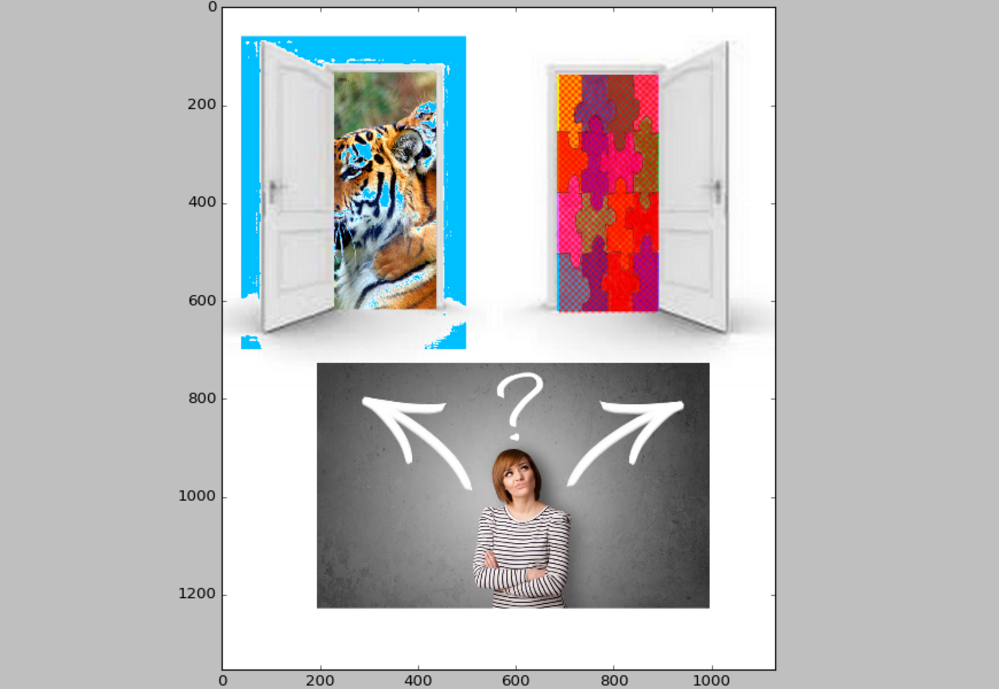
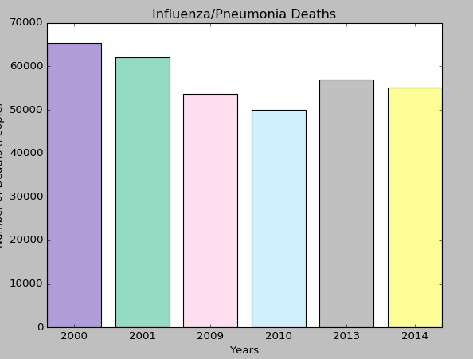
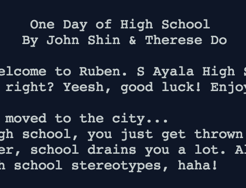

An Undiscovered Road
This is my Scratch project! It's a small game where you reach the finish line to win the game. Click on the image to play! Here's my backlog. Instinct vs. LogicThe end of the semester arrived and our final project was to create an edited image through python. The image depicted after the code had been run displays a woman unsure of whether or not she should follow her instincts or use logic to solve a problem. Click on the image to download the zipfile! The zipfile only contains the code. |
Choice
For my Python project, my partner and I made a story where you have to make the decisions for your team in a zombie apocalyptic world. The choices you make determines the lives of your teammates. The story is called "Choice," click on the image above to play! Here's my flowchart. Data VisualizationFor the first project of the second semester my partner and I were tasked with creating a data visualization to answer whether or not the flu vaccination was effective. Click on the image to download the zip files! |
One Day of High SchoolThis Python project, my partner and I created a game. You're a new student and you have to balance family life with school and social life. This game is called "One Day of High School" Click on the above image to play! Good luck, and have fun! Stay tuned for my next project! |